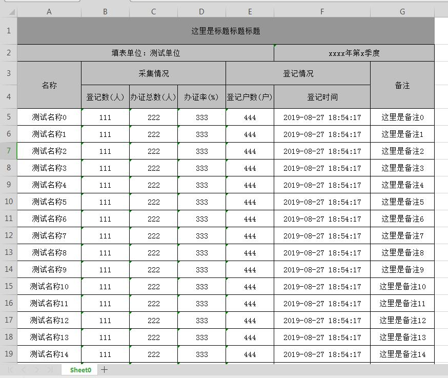
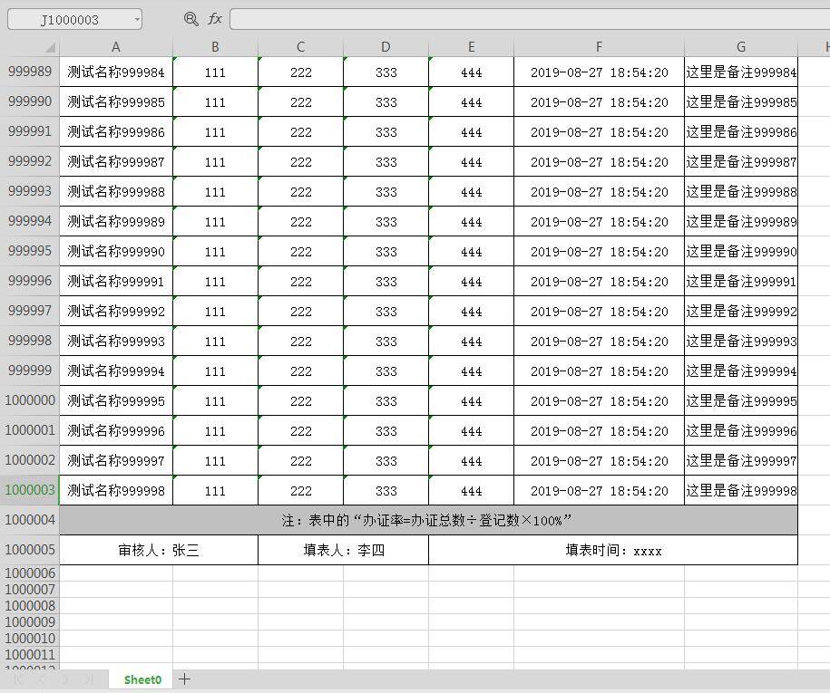

HSSFWorkbook:是操作Excel2003以前（包括2003）的版本，扩展名是.xls，一张表最大支持65536行数据，256列，也就是说一个sheet页，最多导出6w多条数据
XSSFWorkbook:是操作Excel2007-2010的版本，扩展名是.xlsx对于不同版本的EXCEL文档要使用不同的工具类，如果使用错了，
会提示如下错误信息。
org.apache.poi.openxml4j.exceptions.InvalidOperationException
org.apache.poi.poifs.filesystem.OfficeXmlFileException
它的一张表最大支持1048576行，16384列，关于两者介绍，对下面导出百万数据很重要，不要使用错了！
SXSSFWorkbook使用方法和 HSSFWorkbook差不多，如果你之前和我一样用的HSSFWorkbook，现在想要修改，则只需要将HSSFWorkbook改成SXSSFWorkbook即可，下面有我介绍，具体使用也可参考API。
因项目业务，需要导出百万级数据到excel，在研究了各种方案后，最终确定了用POI的SXSSFWorkbook。
SXSSFWorkbook是POI3.8以上新增的，excel2007后每个sheet支持104万行数据。
导出百万数据到excel，很简单，只需要将原来的HSSFWorkbook修改成SXSSFWorkbook，或者直接使用SXSSFWorkbook对象，它是直接用来导出大数据用的，官方文档 有介绍，但是如果有300w条数据，一下导入一个excel的sheet页中，想想打开excel也需要一段时间吧，慢的话有可能导致程序无法加载，或者直接结束进程的情况发生

由于百万数据太长了，这里只截取尾部效果图

/**
* 使用 SXSSFWorkbook 对象实现excel导出
* (一般是导出百万级数据的excel)
*/
public void exportBigDataExcel() {
long startTime = System.currentTimeMillis(); //开始时间
System.out.println("start execute time: " + startTime);
// 1.创建工作簿
// 阈值，内存中的对象数量最大值，超过这个值会生成一个临时文件存放到硬盘中
SXSSFWorkbook wb = new SXSSFWorkbook(1000);
//2.在Workbook中添加一个sheet,对应Excel文件中的sheet
Sheet sheet = wb.createSheet();
//3.设置样式以及字体样式
CellStyle titleCellStyle = createTitleCellStyle(wb);
CellStyle headCellStyle = createHeadCellStyle(wb);
CellStyle cellStyle = createCellStyle(wb);
//4.创建标题、表头，内容和合并单元格等操作
int rowNum = 0;// 行号
// 创建第一行，索引从0开始
Row row0 = sheet.createRow(rowNum++);
row0.setHeight((short) 800);// 设置行高
String title = "这里是标题标题标题";
Cell c00 = row0.createCell(0);
c00.setCellValue(title);
c00.setCellStyle(titleCellStyle);
// 合并单元格，参数依次为起始行，结束行，起始列，结束列 （索引0开始）
sheet.addMergedRegion(new CellRangeAddress(0, 0, 0, 6));//标题合并单元格操作，6为总列数
// 第二行
Row row1 = sheet.createRow(rowNum++);
row1.setHeight((short) 500);
String[] row_first = {"填表单位：", "", "", "", "", " xxxx年第x季度 ", ""};
for (int i = 0; i < row_first.length; i++) {
Cell tempCell = row1.createCell(i);
tempCell.setCellStyle(headCellStyle);
if (i == 0) {
tempCell.setCellValue(row_first[i] + "测试单位");
} else if (i == 5) {
tempCell.setCellStyle(headCellStyle);
tempCell.setCellValue(row_first[i]);
} else {
tempCell.setCellValue(row_first[i]);
}
}
// 合并
sheet.addMergedRegion(new CellRangeAddress(1, 1, 0, 4));
sheet.addMergedRegion(new CellRangeAddress(1, 1, 5, 6));
//第三行
Row row2 = sheet.createRow(rowNum++);
row2.setHeight((short) 700);
String[] row_second = {"名称", "采集情况", "", "", "登记情况", "", "备注"};
for (int i = 0; i < row_second.length; i++) {
Cell tempCell = row2.createCell(i);
tempCell.setCellValue(row_second[i]);
tempCell.setCellStyle(headCellStyle);
}
// 合并
sheet.addMergedRegion(new CellRangeAddress(2, 3, 0, 0));//名称
sheet.addMergedRegion(new CellRangeAddress(2, 2, 1, 3));//人数情况
sheet.addMergedRegion(new CellRangeAddress(2, 2, 4, 5));//登记情况
sheet.addMergedRegion(new CellRangeAddress(2, 3, 6, 6));//备注
//第三行
Row row3 = sheet.createRow(rowNum++);
row3.setHeight((short) 700);
String[] row_third = {"", "登记数(人)", "办证总数(人)", "办证率(%)", "登记户数(户)", "登记时间", ""};
for (int i = 0; i < row_third.length; i++) {
Cell tempCell = row3.createCell(i);
tempCell.setCellValue(row_third[i]);
tempCell.setCellStyle(headCellStyle);
}
// 数据处理(创建100万条测试数据)
List<Map<String, Object>> dataList = new ArrayList<Map<String, Object>>();
for (int i = 0; i < 999999; i++) {
Map<String,Object> map = new HashMap<String,Object>();
map.put("name", "测试名称" + i);
map.put("r1", "111");
map.put("r2", "222");
map.put("r3", "333");
map.put("r4", "444");
map.put("addTime", new DateTime());
map.put("r6", "这里是备注"+i);
dataList.add(map);
}
for (Map<String, Object> excelData : dataList) {
Row tempRow = sheet.createRow(rowNum++);
tempRow.setHeight((short) 500);
// 循环单元格填入数据
for (int j = 0; j < 7; j++) {
Cell tempCell = tempRow.createCell(j);
tempCell.setCellStyle(cellStyle);
String tempValue;
if (j == 0) {
// 乡镇、街道名称
tempValue = excelData.get("name").toString();
} else if (j == 1) {
// 登记数（人）
tempValue = excelData.get("r1").toString();
} else if (j == 2) {
// 办证总数（人）
tempValue = excelData.get("r2").toString();
} else if (j == 3) {
// 办证率（%）
tempValue = excelData.get("r3").toString();
} else if (j == 4) {
// 登记户数（户）
tempValue = excelData.get("r4").toString();
} else if (j == 5) {
// 登记日期
tempValue = excelData.get("addTime").toString();
} else {
// 备注
tempValue = excelData.get("r6").toString();
}
tempCell.setCellValue(tempValue);
// sheet.autoSizeColumn(j);// 根据内容自动调整列宽，
}
}
//设置列宽，必须在单元格设值以后进行
sheet.setColumnWidth(0, 4000);//名称
sheet.setColumnWidth(1, 3000);//登记数(人)
sheet.setColumnWidth(2, 3000);//办证总数(人)
sheet.setColumnWidth(3, 3000);//办证率(%)
sheet.setColumnWidth(4, 3000);//登记户数(户)
sheet.setColumnWidth(5, 6000);//登记时间
sheet.setColumnWidth(6, 4000);//备注
// 注释行
Row remark = sheet.createRow(rowNum++);
remark.setHeight((short) 500);
String[] row_remark = {"注：表中的“办证率=办证总数÷登记数×100%”", "", "", "", "", "", ""};
for (int i = 0; i < row_remark.length; i++) {
Cell tempCell = remark.createCell(i);
if (i == 0) {
tempCell.setCellStyle(headCellStyle);
} else {
tempCell.setCellStyle(cellStyle);
}
tempCell.setCellValue(row_remark[i]);
}
int remarkRowNum = dataList.size() + 4;
sheet.addMergedRegion(new CellRangeAddress(remarkRowNum, remarkRowNum, 0, 6));//注释行合并单元格
// 尾行
Row foot = sheet.createRow(rowNum++);
foot.setHeight((short) 500);
String[] row_foot = {"审核人：", "", "填表人：", "", "填表时间：", "", ""};
for (int i = 0; i < row_foot.length; i++) {
Cell tempCell = foot.createCell(i);
tempCell.setCellStyle(cellStyle);
if (i == 0) {
tempCell.setCellValue(row_foot[i] + "张三");
} else if (i == 2) {
tempCell.setCellValue(row_foot[i] + "李四");
} else if (i == 4) {
tempCell.setCellValue(row_foot[i] + "xxxx");
} else {
tempCell.setCellValue(row_foot[i]);
}
}
int footRowNum = dataList.size() + 5;
// 注
sheet.addMergedRegion(new CellRangeAddress(footRowNum, footRowNum, 0, 1));
sheet.addMergedRegion(new CellRangeAddress(footRowNum, footRowNum, 2, 3));
sheet.addMergedRegion(new CellRangeAddress(footRowNum, footRowNum, 4, 6));
long finishedTime = System.currentTimeMillis(); //处理完成时间
System.out.println("finished execute time: " + (finishedTime - startTime)/1000 + "m");
//导出
HttpServletResponse response = this.getResponse();
String fileName = "报表文件名称.xlsx";
try {
fileName = new String(fileName.getBytes("UTF-8"), "ISO-8859-1");
response.setHeader("Content-disposition", "attachment;filename=\"" + fileName + "\"");
OutputStream stream = response.getOutputStream();
if (null != wb && null != stream) {
wb.write(stream);// 将数据写出去
wb.close();
stream.close();
long stopTime = System.currentTimeMillis(); //写文件时间
System.out.println("write xlsx file time: " + (stopTime - startTime)/1000 + "m");
}
} catch (Exception e) {
e.printStackTrace();
}
}
CellStyle标题，表头，内容样式代码：
private static CellStyle createTitleCellStyle(Workbook workbook) {
CellStyle cellStyle = workbook.createCellStyle();
cellStyle.setAlignment(HorizontalAlignment.CENTER);
cellStyle.setVerticalAlignment(VerticalAlignment.CENTER);
cellStyle.setBorderBottom(BorderStyle.THIN);
cellStyle.setBottomBorderColor(IndexedColors.BLACK.index);
cellStyle.setBorderLeft(BorderStyle.THIN);
cellStyle.setLeftBorderColor(IndexedColors.BLACK.index);
cellStyle.setBorderRight(BorderStyle.THIN);
cellStyle.setRightBorderColor(IndexedColors.BLACK.index);
cellStyle.setBorderTop(BorderStyle.THIN);
cellStyle.setTopBorderColor(IndexedColors.BLACK.index);
cellStyle.setFillForegroundColor(IndexedColors.GREY_40_PERCENT.index);
cellStyle.setFillPattern(FillPatternType.SOLID_FOREGROUND);
return cellStyle;
}
private static CellStyle createHeadCellStyle(Workbook workbook) {
CellStyle cellStyle = workbook.createCellStyle();
cellStyle.setAlignment(HorizontalAlignment.CENTER);
cellStyle.setVerticalAlignment(VerticalAlignment.CENTER);
cellStyle.setBorderBottom(BorderStyle.THIN);
cellStyle.setBottomBorderColor(IndexedColors.BLACK.index);
cellStyle.setBorderLeft(BorderStyle.THIN);
cellStyle.setLeftBorderColor(IndexedColors.BLACK.index);
cellStyle.setBorderRight(BorderStyle.THIN);
cellStyle.setRightBorderColor(IndexedColors.BLACK.index);
cellStyle.setBorderTop(BorderStyle.THIN);
cellStyle.setTopBorderColor(IndexedColors.BLACK.index);
cellStyle.setFillForegroundColor(IndexedColors.GREY_25_PERCENT.index);
cellStyle.setFillPattern(FillPatternType.SOLID_FOREGROUND);
return cellStyle;
}
private static CellStyle createCellStyle(Workbook workbook) {
CellStyle cellStyle = workbook.createCellStyle();
cellStyle.setAlignment(HorizontalAlignment.CENTER);
cellStyle.setVerticalAlignment(VerticalAlignment.CENTER);
cellStyle.setBorderBottom(BorderStyle.THIN);
cellStyle.setBottomBorderColor(IndexedColors.BLACK.index);
cellStyle.setBorderLeft(BorderStyle.THIN);
cellStyle.setLeftBorderColor(IndexedColors.BLACK.index);
cellStyle.setBorderRight(BorderStyle.THIN);
cellStyle.setRightBorderColor(IndexedColors.BLACK.index);
cellStyle.setBorderTop(BorderStyle.THIN);
cellStyle.setTopBorderColor(IndexedColors.BLACK.index);
return cellStyle;
}
完毕！good luck！